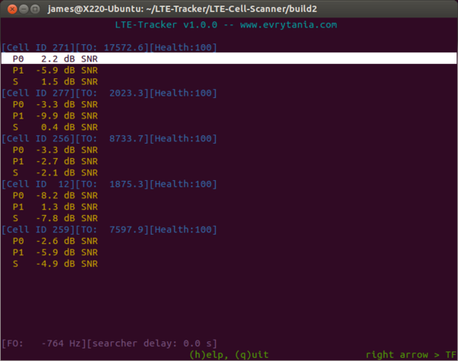
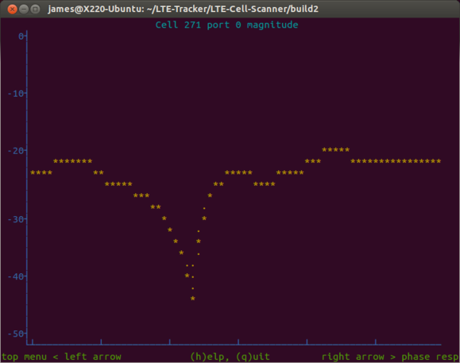

The latest version of this document is available online.
LTE-Tracker is a program that continuously searchers for LTE
cells on a particular frequency and then tracks, in realtime, all found cells.
With the addition of a GPS receiver, this program can be used to obtain basic
cellular coverage maps.
LTE-Tracker -f frequency [optional_parameters]
Basic options
-h --help
print this help screen
-v --verbose
increase status messages from program
-b --brief
reduce status messages from program
-i --device-index N
specify which attached RTLSDR dongle to use
Frequency options:
-f --freq fc
frequency where cells are located
Dongle LO correction options:
-p --ppm ppm
crystal remaining PPM error
-c --correction c
crystal correction factor
Launch the tracker to track all LTE cells on 739 MHz:
LTE-Tracker -f 739e6
After a short initial frequency calibration, the program enters its main display screen which provides a list, updated in realtime, of all the LTE cells it is tracking. The program tracks each cell's SNR, frequency offset, time offset, and MIB decoding status.
Furthermore, while all the cells are being tracked, a separate parallel searcher thread is searching for new cells to be added to the tracked cell list. As the receiver is moved around among different basestation coverage areas, it is normal to see new cells pop up and weak cells removed from the display.
Above is an example display where 5 cells are being tracked. All cells display their time offset (relative to the dongle's frame timing), and the SNR of port 0, port 1, and the synchronization channel.
A dual core i7-2640 cpu can track approximately 4 cells with two antenna ports per cell. If the cell trackers fall too far behind, they will automatically drop some data and a message will be printed on the main screen.
The up/down arrow keys can be used to highlight different ports and pressing 'enter' will display the transfer function from that port on the basestation to the dongle's antenna.
The screen capture above shows the instantaneous transfer function of port 0 of cell 271. This is a magnitude plot and a phase plot is also available by pressing 'enter' one more time.
While the transfer function is displayed, pressing up/down arrow will switch to displaying the transfer function of different ports.
At any time, press Esc to return to the main menu or 'q' to exit the program.
To view further options (refresh rate, buffer status, etc.), press 'h'.
LTE-Tracker accepts the same --correction and --ppm options
that CellSearch did. Please see the
documentation for CellSearch for
details on how to use these options. Proper use of these options will
significantly speed up the initial frequency calibration, but will have no
effect on the realtime functioning of this program.
The time offset of all the tracked cells drifts very slowly (about 0.1 samples every second).
The SNR of very weak cells is sometimes reported as NaN.